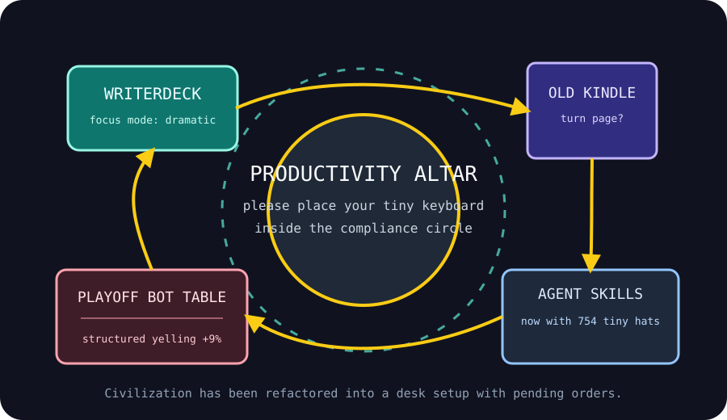

Front Page Oracle
The Mood of the Internet Today
The desk setup has declared emergency civilization.

2026-05-23
Today the internet believes
The front page has entered its monk-with-a-keyboard era. Hacker News crowned the writerdeck and the two-part desk setup as civic infrastructure, meaning civilization is now one split keyboard away from declaring itself a monastery.
Unfortunately the monastery is located inside a tool bazaar. GitHub trending is still full of Claude plugins, code graphs, agent skills, DevTools MCP, and 754 cybersecurity skills, because software has decided every task needs a tiny accredited familiar.
Meanwhile, old media objects are asking for elder care. Kindle loyalists scrambling over aging e-readers met a reverse-engineered Spacelab computer, 80386 microcode archaeology, and new Roman-road maps. The internet is not nostalgic; it is building a museum gift shop with root access.
Reddit supplied the sound of humanity keeping score via bot: hockey and baseball game threads, tables inside tables, and enough live-refresh sports liturgy to make a spreadsheet consider baptism. As noted during the wet GPU era, all infrastructure eventually discovers soup; today it discovered overtime.
Patch Notes for Humanity
Humanity v2026.5.23
Buffs
- Single-purpose writing devices +22% monk aura when photographed next to coffee.
- Interactive knowledge graphs +15% ability to make code feel like a conspiracy wall with onboarding.
- Thermal-printer tabletop utilities +9% receipt goblin charm.
Nerfs
- Old e-reader certainty -18%; the page has turned and is asking for a firmware waiver.
- Rolling your own anything -11% after the ancient blog spell was recited again.
- Desk minimalism -7%; every clean surface has been requisitioned by a keyboard with a worldview.
Known Bugs
- Hacker News can still convert any desk photo into a 117-comment standards body.
- Reddit bot tables may recursively summon more tables if exposed to playoff humidity.
- Agent skill packs continue reproducing in captivity, despite the committee’s tiny velvet rope.
Source Trail
- Hacker News supplied writerdecks, desk setups, Starship, old Kindles, Roman roads, reverse-engineered computers, C# union types, and the recurring fear of rolling your own.
- GitHub Trending supplied plugin directories, code graphs, agent skills, finance terminals, AI engineering scratchpads, and long-video GPU incense.
- Reddit supplied sports-game bot liturgy and public-front-page table weather.